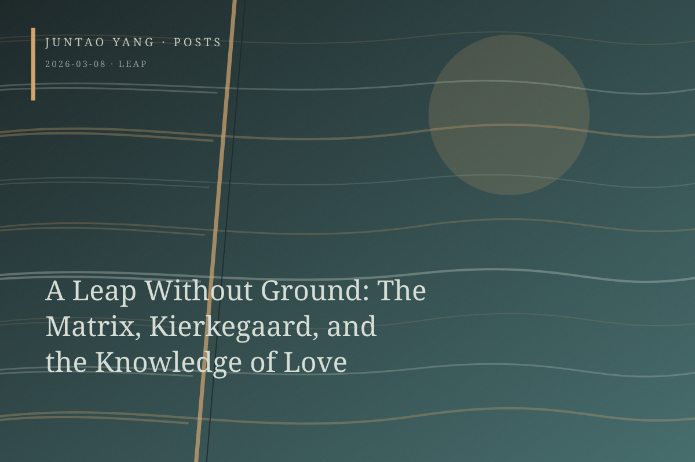

<content>
A budget flight to Denmark happened to offer Lana Wachowski’s much-maligned fourth Matrix film. It shifts attention away from the relation between free will and determinism, and from the franchise’s theological existentialism, toward a critique of technology. By the second decade of the twenty-first century, the streams of green code already looked markedly out of date. Through the Oracle, the Wachowskis replace both question and answer with an existentialist circle—existence is choice is existence—an insidious tautology.
What this copper-green cul-de-sac requires is a genuinely Christological leap. Several of the franchise’s most famous shots do exactly this: Neo’s first jump between buildings and Trinity’s fall. The leap precedes any knowledge of flight. At that instant, it is utterly without ground.
The real question, of course, is choice—or faith. It is neither an objectively verifiable fact nor a purely subjective illusion. It is a performative event that, at the moment of its enactment, retrospectively reconstructs the meaning of the entire causal chain. Suspended and undecidable, it nevertheless becomes decisive: a succession of discrete and groundless decisions, each moment retrospectively reconstituting the meaning of the whole sequence that came before it.
Then I visited Kierkegaard’s grave. In the morning mist conjured by the Øresund and a rare spell of good sunlight, his grave and the graves around it were adorned with flowers, pine needles, and mistletoe, as if the books produced over a lifetime denied their authors any rest. Might we understand the leap of faith—the moment of choice—in this way? It does not simply cross an abyss; it leaps the ground into existence within the void. Every ordinary moment is a leap. Land is the product of the leap rather than its precondition. In this miracle of creation ex nihilo, like the parting of the Red Sea, we are compelled to produce true knowledge through the retrospective labor of an entire life.
The Wachowskis and Kierkegaard may be trying to state the same proposition in different languages. Within this self-construction of meaning, the first knowledge to emerge is love, because love is the purest instance of a structure that is neither predetermined nor accidental and that ultimately constitutes its own ground retroactively. Love also lies behind the Levinasian command of the Other. Its ontological dimension allows it to be extended into the core of Christian theology, though it carries an ancient and unavoidable tension.
Not far from Kierkegaard’s gravestone stands Andersen’s, comparatively solemn and orderly. The son of a poor shoemaker and a washerwoman from Odense, he packaged subaltern suffering in fairy tales and used them to ascend toward high society. Are those stories about love? I am not sure Andersen intended them to be. Yet he bundled up all of his desperation and put it on the market, sending it across the Baltic through sudden rain and violent wind and stuffing it into dreams that were slightly frightening and perverse. Other feelings, perhaps those for Edvard Collin, were buried in fruitless sacrifices and bitter self-injury.
Life is thus compelled to become an absurd tautology, a repetition driven by suffering and desire—and therefore also by love—that cannot stop itself. “Mr. Anderson—Andersen?—why do you persist?” the question comes.
“Because I choose to.”
</content>
March 8, 2026
A Leap Without Ground: The Matrix, Kierkegaard, and the Knowledge of Love
The leap in The Matrix and Kierkegaardian faith share a performative structure: a groundless choice that retroactively produces its own ground, most purely in love.
